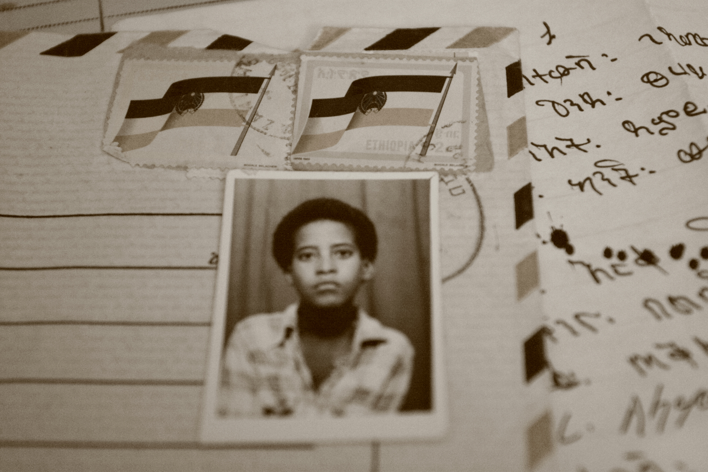
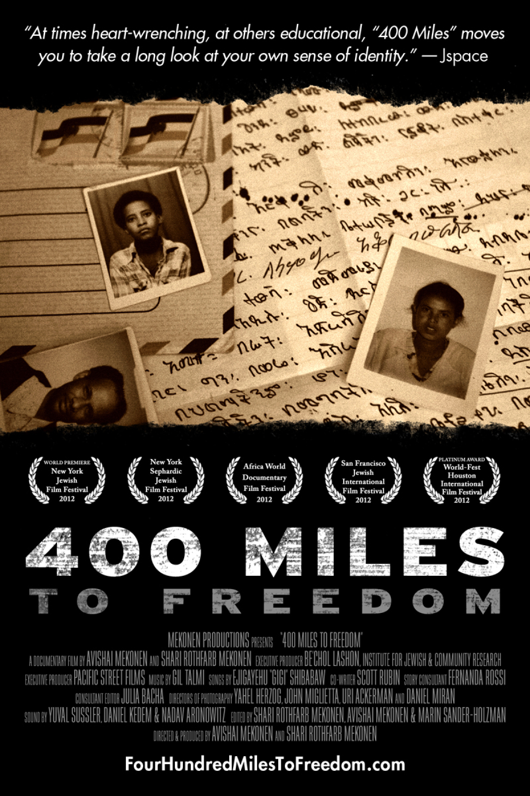
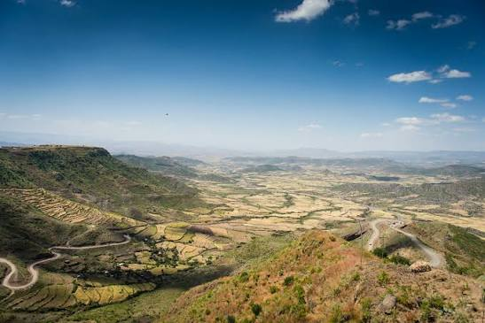
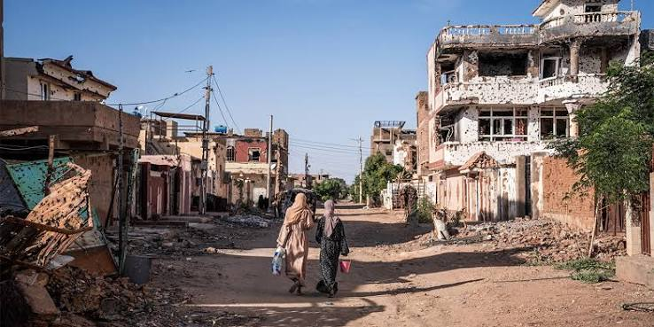
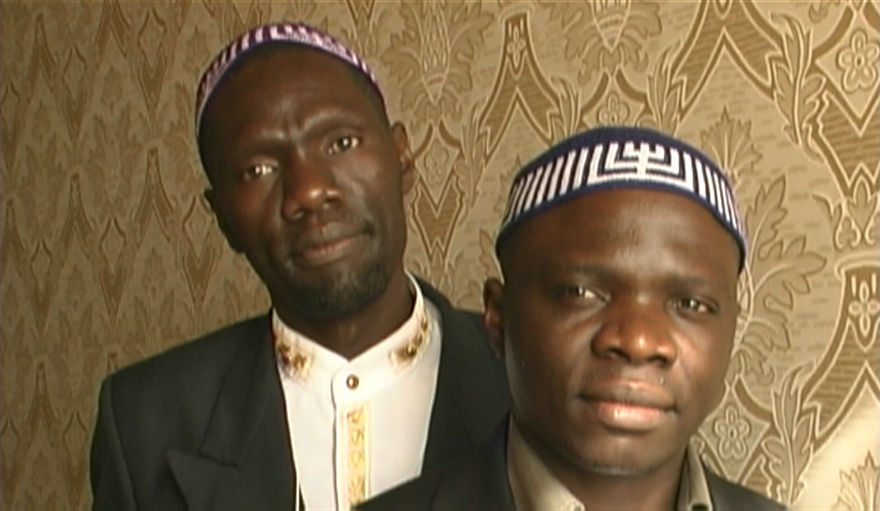
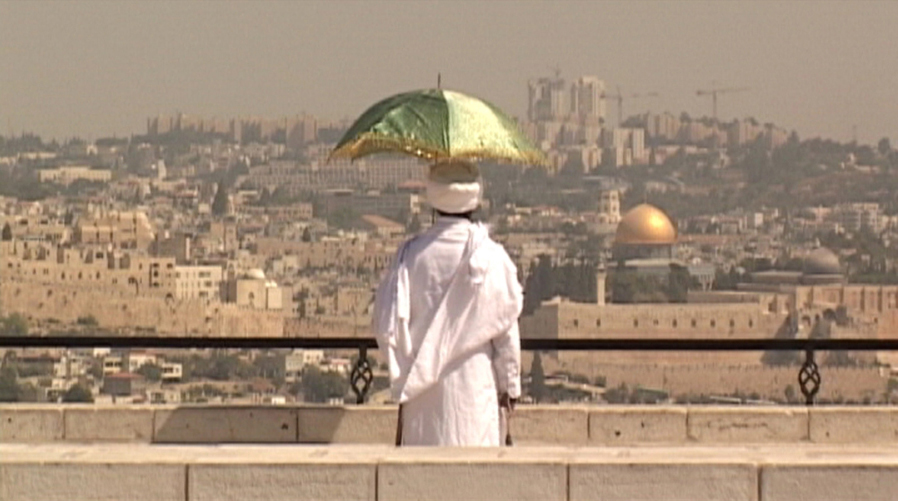
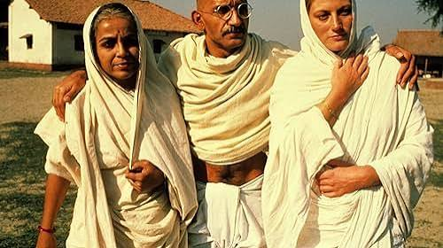
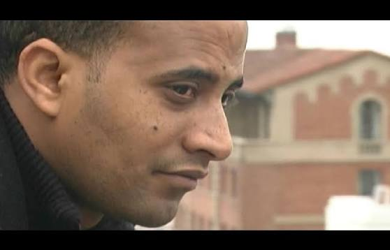
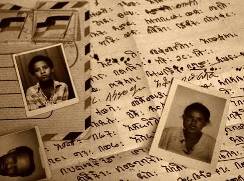

Length 60 min Release year 2012 Countries of origin United States, Israel Languages English, Hebrew, Amharic Subtitle English Genre Documentary Format DVD – EDU + PPR, Blu-Ray – EDU + PPR, DSL, PPR
In 1984, the Beta Israel, a secluded 2,500-year-old community of observant Jews in the northern Ethiopian mountains, fled a dictatorship and began a secret and dangerous journey of escape. Co-director Avishai Mekonen, then 10 years old, was among them. In this film, he breaks his 20-year silence about the brutal kidnapping he endured as a child in Sudan during his community’s exodus out of Africa. This life-defining event launches an inquiry into identity, leading him to African, Asian and Latino Jews in Israel and the U.S.
Follow the journey and the story behind the film.

Fleeing religious persecution and a harsh dictatorship, families embarked on a perilous, month-long trek on foot across rugged terrain.

Served as a perilous transit point and refugee lag where families faced extreme violence, hunger, and traffickers.
The promised sanctuary for the Ethiopian Beta Israel Jewish community fleeing religious persecution in 1984.
AVISHAI YEGANYAHU MEKONEN’S work includes the award-winning documentary VIDEO FLOUR, screened widely at international film festivals and broadcast on Israel’s Channel 1. He has directed and written (GENERATIONS OF A FAMILY, ANCHOR and HOTHOUSE, broadcast on Israel’s Channels 1 & 2), produced (MENELIK), assistant directed (CARAVAN 841), acted (lead role, LAYLA B’ADDIS), and crewed numerous Israeli and American dramatic, documentary and news programs. For his recent photography/video project SEVEN GENERATIONS he was a recipient of the Six Points Fellowship, a partnership of JDub Records, Avoda Arts, and the Foundation for Jewish Culture, made possible with major funding from UJA-Federation of New York. Focusing on an Ethiopian oral history custom while examining the relationships between the elder and younger generations of Ethiopian Jews in Israel, the project has been presented as solo exhibitions in New York and Philadelphia.
SHARI ROTHFARB MEKONEN, director of the award-winning short films FUR and OCEAN AVENUE, featured in over fifty international film festivals including the Los Angeles Independent Film Festival, AFI Los Angeles International Film Festival, and Women in the Director’s Chair, is a professor of video at CUNY/BMCC, where she is the interim chair of the Media, Arts & Technology Department and writer/director of its National Science Foundation grant, CREATING CAREER PATHWAYS FOR WOMEN AND MINORITIES IN DIGITAL VIDEO TECHNOLOGY.
“A stunning piece of filmmaking that also gives the audience a vast amount of new knowledge and perspective and leaves a powerful impact on the viewers.”





Interested in learning more about the film or arranging a screening?
CONTACT US